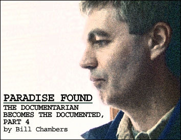
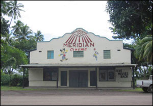
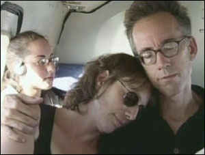

|

Film Freaks Central - Paradise Found
By Bill Chambers
January 16, 2005 | I'm betting that a lot of people first
heard about Steve James the same way I did, through "Siskel &
Ebert"'s protocol-shattering review of his Hoop Dreams months in advance of the film landing a distributor, let alone a release date. Not to pay him the backhanded compliment that he's "colour blind" (doled out to virtually every white filmmaker who ever cast Denzel Washington), but I like to think it flatters Mr. James that until his mug started showing up on the awards circuit, I presumed the thumb-happy critics were referring to Michael Dudikoff's African-American co-star from American Ninja. There are, of course, few less concealed discussions of race on offer than Hoop Dreams or the epic, absorbing PBS documentary James co-produced, co-directed, and edited about the immigrant experience, "The New Americans", which recently beat out such higher-profile contenders as Ric Burns' "New York" and Martin Scorsese's "The Blues" for Best Limited Series at the International Documentary Association Awards.
But neither is James' work in the liberally pious vein of Stanley Kramer. For a guarantee of his humility, look no further than his masterful Stevie, in which he torments himself with the question of whether the camera he wields is the be all and end all of his social conscience. James' latest, Reel Paradise, initially seems like something of a departure for him: a film geek's Mosquito Coast (to paraphrase its subject), it documents the last month in former "Split Screen" host John Pierson's year-long stay on the Fijian island of Taveuni, where he took over the local movie theatre, the 180 Meridian, and admitted Taveunians of any stripe for free. Premiering next weekend at, appropriately, Sundance (familiar stomping ground for Pierson, whom VARIETY once dubbed "the guru of independent film"), Reel Paradise deftly juggles the varying degrees of culture shock as experienced by not only Pierson and wife Janet (sort of the Joyce Brabner to John's Harvey Pekar), but also their 16-year-old daughter Georgia and über-precocious adolescent son Wyatt. In so doing, the unflinching yet effervescent film becomes a mirror image of "The New Americans": the emigrant experience.
It was an honour to finally make Mr. James' acquaintance via telephone last Tuesday after months of playing e-mail tag with him. Generous with his time and resources and wickedly self-deprecating, he lives up to both his everyman billing (even the guy who created "Riptide" goes by "Stephen J. Cannell") and the impression you get from his films that he's incapable of pretension.-Bill Chambers
STEVE JAMES: I was very pleased to see that you liked Reel Paradise.
FILM FREAK CENTRAL: Oh, it's wonderful. Shorter than a lot of your stuff.
And it's funnier, too, isn't it?
You warned me ahead of time that it might not be as funny to me as it sounded, but yes, it's very funny. I think you were worried about the Sundance write-up?
Have you read the Sundance write-up?
I have.
What do you think of the Sundance write-up?
I think that it's a festival write-up. I never really trust anything written by any festival.
Someone who's a PR person--or PR advisor, I should say--read it and said, "This is perfect." Because it's sort of what people would expect the movie to be about, and that will get people to come see it. What they'll see is something that's, in the end, more interesting and complicated than what that write-up indicates. If that works for people then I'm all for that. Just as the experience of making the film was often unintended and gave us more than one bone to chew on, for me as a filmmaker, I think that's great when the viewer has the same sort of experience. I really believe that if you put your film together right, the viewer, in watching a film, has in an incredibly distilled way--they travel the same path as you did as a filmmaker. And that certainly happened on Hoop Dreams, it happened on Stevie, it happened on this film. It happened on everything I've done, because I'm not setting out with an agenda of what the film is to be. That act of the story evolving before you and taking you places you don't necessarily anticipate or expect but you're willing to go, really is what the filmmaking part of it's about. For me, those are always the best film viewing experiences.
You're all ready for Sundance, are you?
I dunno. It'll be interesting. You know, the film was funded by Kevin Smith and his production company through Miramax, where he has a deal. In essence, the film was funded by Kevin Smith's company but with Miramax's money. The presumption was that Miramax would then distribute the film. But we're now in limbo as a result of the Weinsteins' messy divorce from Disney.
They don't want to release it themselves?
They apparently don't want to release the film, and I think that has everything to do with the fact that they're sort of in a very different place even than when we started. And the future of Miramax is up in the air--a small documentary like this is not something that's really very big on their radar at this point. They've been extremely cooperative with us in the finishing of the film and helping us with clearances, all that stuff. The people who work at Miramax have been extremely supportive, but it truly gets down to a question of, "Does Miramax have a company?"
If the film does not get distributed theatrically, will that be all right with you? As far as going to cable or public television instead, I mean.
I think it would be okay. I think in a lot of ways it's a perfect festival film, because of what it's about and who it's about. In fact, there has already been a lot of interest in the film from other festivals. One of the things we want to find out at Sundance to whatever degree we can is, What are the other prospects for the film? Will it play well with audiences, will it be the kind of film that could get some kind of theatrical distribution--given that we kind of live in the age of the documentary, where so many films are getting at least some kind of theatrical distribution?
What kind of ripple effect are you feeling from Fahrenheit 9/11 in the documentary community?
Taken as a whole, the success of Fahrenheit 9/11 has gotta be a positive thing for documentaries. Any film that breaks through in such a big way--that's a documentary that gets people talking, elicits a response, draws more attention to documentary--makes documentary a lot more viable, commercial form that distributors are interested in.
Super Size Me.
It's funny, you know, when Hoop Dreams came out, it sort of eclipsed Roger & Me as the [highest-grossing]--what you might call "real documentary," not the IMAX sort of documentary--of all time. Around $8M theatrically, did quite well on video, but grossed something like $8M theatrically. Well, that remained pretty much the way it was until Bowling for Columbine. And then there was also the one about birds, Winged Migration, and Super Size Me, and now Fahrenheit 9/11--in quick order there were at least four documentaries that passed that $8M market. Of course Bowling for Columbine passed it in a huge way, Fahrenheit 9/11 did [business] way beyond anybody's comprehension... It's really changed in the last few years. The profile of documentaries couldn't be higher, and so I think there are young filmmakers now coming out of school or picking up a camera if they didn't go to school and thinking--who would've thought five years ago, certainly ten years ago, I want to be a dramatic film director--who are now saying, "I want to direct documentaries. Be a documentary filmmaker." That there's a cachet with documentary now that there hasn't been. So I think all that is good. If you hear a "but" coming, it's only to say that the commercial forces at work could compromise to some degree the work. If every documentary has to be entertainment first in order to attract distributors or attract audiences... I mean, not that I'm interested in boring documentaries, but if entertainment takes on a greater and greater significance, as it has in dramatic films, then I think there could be some real downside to that.
Which is what happened to the independent film: it became a commodity and ceased to exist.
That's an excellent point, I think that's exactly right--and you see little disturbing trends in that direction, everybody looking for some slam-dunk documentary. It can be provocative, but, y'know, there are a lot of bad independent dramas that get made that are quote-unquote provocative or "shocking" in their content--it doesn't necessarily make them good movies. I think the picture is overall positive, but I think that would be the concern, that documentary doesn't travel the same path as the American independent drama.
Speak of the devil, some time ago you mentioned to me that an earlier version of Reel Paradise acknowledged Michael Moore's refusal to help subsidize Pierson's exploits abroad. I'm wondering why you cut that out, considering the little extra bit of publicity that might be gained from leaving it in.
Well, y'know, I don't know why we cut that out. Maybe we should've left that in. It's in the press kit, and it was kind of funny, his response. I don't know, it just kind of fell out, maybe it felt like we were singling him out to criticize him for not contributing. It might've felt a little unfair, because at the time that [Pierson was soliciting] for support from him and a lot of other filmmakers, he hadn't made Bowling for Columbine yet, the book about fat white men...?
Stupid white men.
So he wasn't, y'know, flush with a lot of income. We didn't want to belabour the whole thing and explain all that in order to be fair to him.
In the same press kit, in your director's statement you say, "Going in I had greater expectations that the film would explore the meaning of free movies on the locals." What was your preconceived notion of the meaning of free movies to the locals?
Well I didn't really know much of anything about Fiji other than what I was able to glean from John going in and doing some preparatory reading. But I knew from John and the reading that it wasn't like goin' to Hawaii, it was for all practical purposes a third world or emerging world--whatever the proper term now is--country. And on the island where John and his family were, Taveuni, it is truly that, there's no major city, it's small villages for the most part, with merchants and farmers and fishermen. I knew the kinds of movies that John was showing, it was quite a variety but, y'know, it also included a lot of Hollywood films.
Mostly, maybe.
Yeah, I mean you look at the list in the press kit, I don't know how it breaks down, but it's certainly weighted more that way. I guess, yeah, I wondered what this is like for them, to get such a dose of American mass culture in this way. I made an assumption that they probably didn't have many other venues to get that--and that was sort of true and not true. One of the things that's not in the movie is that there is one TV station on the island, and they do get reruns of "Walker: Texas Ranger". It was never on when we went to shoot, it was pre-empted. It would've helped to put that in the movie.
(laughs)
They're not immune to contemporary culture there. There are very few places left in the world where the major western culture hasn't had an impact, and certainly Taveuni was one of them, but it's far different from any small town you would encounter in America or Canada. So going in I was very, very curious about just what could we glean what that impact was, almost in a sociological way. But if I didn't know it going in, I certainly knew it when I got there, that there's a long history of showing popular movies there--whether they be from India or from America or from Great Britain--with the previous owner. The theatre had been around for fifty years showing movies, and even though in recent years it had become increasingly difficult for people who are poor members of the community to go to the movies because they just couldn't afford it, they weren't complete neophytes.
What did you learn instead?
Well, we would interview people outside the theatre about the films, and we really made an effort to try and draw people out, their feelings about the film and what they got from them and what they thought of America from them. It was very hard for them to articulate it, I think--it really did make me think about just how uncertain and unsure and unresolved we are in the "first world." There's a lot of discussion about it, but there's also a lot of conflicting thought about the whole impact of mass culture on our lives. In some respects, the film went off in a different direction because I am a big believer in--y'know, maybe it's laziness, I dunno--I'm a big believer in when you start a film, you start a film with certain ideas of what you want to accomplish and what you're setting out to do. [But] once you get there, it really does become a process of discovery, of letting the people who you're following and their story and the story that wants to evolve lead you where they go. I mean, I never would've anticipated that the film we ended up with in Reel Paradise was the film I was setting out to make.
For the better, I take it.
For me, I find it a more interesting film. That's been true of every film I've done. What I've conjured up in my mind of what I think the film is going to be and what it's going to be about and what's going to be most interesting about it, invariably is surpassed by what we actually encounter--and it's always more rich, it's always more complicated, it's always more interesting. And I think that's what happened here. The family's individual relationships with each other and to the culture, I was very fascinated with them, and that became a very important element of the film. And some of my interest in the impact of the movies and John's attitudes about the movies vs. the church, all of those things were things that interested me going in and are still reflected in the movie, but they're not all the movie's about anymore.
I love the idea that the Catholic church is offended by free movies because they're trying to preach capitalism to the natives.
(laughs) Yeah, John's interesting through that whole section because he's clearly engaging in a Marxist analysis of the church in Fiji, vis-à-vis their world plan and his world plan. He's obviously a very, very educated man, but at the same time he is, y'know, a missionary for film. That to me was of course one of the most interesting parallels, his missionary zeal for film was what theirs was for God, Christianity, Jesus, therefore there was an inevitable conflict.

The 180 Meridian, as photographed by Janet Pierson
"In Fiji, a black woman coming into a white man's home and kind of taking over his life is a pretty attractive fantasy."
In our interview with [The Magdalene Sisters director] Peter Mullan, he said he was on an airplane in business class and couldn't believe that three African-American men seated nearby were laughing along with the in-flight movie, Bringing Down the House. I felt similarly disillusioned when I read that, but then I saw the clip in Reel Paradise, where the Fijians are so wildly enthusiastic about it, and it humbled me. I don't know how to reconcile those two judgment calls without feeling paternalistic.
I think that's a very interesting question. The best answer for me to that question actually goes to "New Americans", but first, yeah, when I watched that movie at the theatre in Fiji, 'cause I'd never seen it before, there were parts of it that struck me as, well, y'know, incredibly racist--
It's one of the most racist movies of the last twenty years.
(laughs) Janet, even though this isn't in the film, had the same reaction to the movie. The thing you have to understand is that when John programs these, he's been living in Fiji, so he's programming movies he has not seen. He's programming what he thinks the audience would want to see, so he programmed the movie with the idea not that it was gonna be a masterpiece by any stretch, but Queen Latifah he already knew was popular there, and he figures this could be a real crowd-pleaser. And, in fact, it was. But whatever your politics in watching a film like this, it is interesting to get a take from people who are very different from ourselves. As Vijen, the theatre owner [in Suva], remarks in that section, that movie was extremely popular throughout Fiji, and part of its popularity--he surmised--was due to the fact that a black woman coming into a white man's home and kind of taking over his life, the notion that that could happen--either in America or in Fiji, where there is a white expatriate population which is by and large wealthier, more educated, better-off--is a pretty attractive fantasy. To see that white woman and Queen Latifah fighting, it's pretty appealing. Plus the fact that it is a funny scene.
I actually found that scene funnier seeing it in Reel Paradise.
Well, a lot of scenes in movies are funnier and more interesting when you see them at the 180 Meridian than they are on a screen here or in Toronto or in the west where audiences are by and large--compared to Fijians--extremely restrained. I think the fact that on Taveuni, seeing movies before John got there was an extremely rare treat. There were so many kids in the theatre watching the movies when John was showing 'em, too, it made for this extremely lively experience.
You were saying about "The New Americans"?
Not to get too pedantic about this. Coming to America--there's a moment in ["The New Americans"] in the Nigerian story, the story that I happened to direct, where Israel and his wife are in the refugee camp getting ready to come to America, you have this interview from the camp with him that is played there in voiceover and on camera where he says he feels just like Eddie Murphy in Coming to America. Y'know, I'd never seen that movie, and it was because he talked about it in such loving terms and because he seemed to sort of be Eddie Murphy at that point in time, I went out and rented the movie. One part of my brain was sort of watching it as who I am, and saying, "Oh, well, this is kind of a silly, ridiculous comedy that's far-fetched and removed completely from the reality of what it means to be an immigrant." But the other part of my brain was watching it--having talked at that point with Israel more about what it was about this movie that really appealed to him--through his eyes as best I could. In fact at other points during the course of making "New Americans", people would reference this film. This was a touchstone film in Nigeria, and the reason it was a touchstone film it seems is that people were very much aware that it's a comedy, that it's broad, and they enjoyed the humour. Have you seen the film?
Yep.
They thought it was hilarious the way the African nation was portrayed. There's no such degree of wealth, that was of course very cartoonish to them, but they found it funny. What I think makes the film so impactful to them is that they watch this guy come to America, and he keeps his regal background a secret, he's in search of the perfect wife. So he is extremely humbled to the nth degree--working the kinds of jobs that the immigrants know that you in fact end up working when you come to America. Yet he remained pure of heart and he becomes, in essence, this inspirational character, because he remains true to who he is as this proud African prince--while putting up with all manner of humiliation. In their eyes, he ends up being this incredibly inspired, proud character, even though they know it's a comedy. They're not missing the humour of it.
Have you seen The Terminal or Harold and Kumar Go to White Castle?
No, no.
The two movies were on my mind when I was watching "The New Americans". There's a scene in Harold and Kumar where a cop unceremoniously harasses the two main characters and one of them winds up in a jail cell with a black man who didn't do anything, either. It's played for laughs, but it resonated with me during "New Americans" when Israel recounts his similarly inexplicable run-in with the police.
You can't believe that an American cop would talk that way.
Which is something that's starting to impress me about mainstream American cinema: ethnicity and its attendant issues are moving into the foreground in movies that weren't necessarily made expressly to say those things.
There's only gonna be more of that because I think that Hollywood is discovering something that is becoming clearer and clearer in America: we are no longer just a black and white country. This is an incredibly multi-ethnic country and is only gonna become more so. This country is undergoing an incredible metamorphosis--and so are a lot of other countries in Europe as well. And I think Hollywood and everyone is discovering that there are real audiences out there. Not just the discreet ethnic audience representive of the film, but just the immigrant experience as a subject is one that is of great interest to a lot of people.
Not to knock your colleagues, but I found it interesting that in the press notes for "New Americans", you were the only one of the three producers interviewed who hoped that it would give immigrants something to commune with. You made it sound like something other than, well, homework for white people.
In fairness to my colleagues, we all felt that and I just happened to say it. When we were doing the series, in the course of trying to raise money and make contacts for Outreach and all the things you have to do to get something like this made, we would go around to various conferences around the country. In fact we became for a while there sort of the invited entertainment for their conferences, they would target a night where we would show a 25-minute demo that I'd cut of the series, then we'd talk about the series, and we just saw the way that it played for audiences. We saw the reaction, not just emotional--I mean, that, we could've expected frankly--but the humour, the sense that they saw their own lives up there on the screen. I mean I think one of the things I'm proudest of about this series is just how funny it is.
Was part of the attraction to Reel Paradise the chance to do the flipside to "The New Americans"?
Yeah, it's funny that that kind of worked out. I think that was an interesting part of it was, yeah, having just been, off and on, for six years, on a project in which we were trying to look at America through immigrant eyes, now here we are trying to look at this experience of Americans going abroad--"New Americans" in reverse. Without being too on-the-nose or belabouring it, one of the things I hope that comes through in Reel Paradise is that it's a story of America abroad in a way, and the differing ways in which America lives in the world is kind of represented through each of the main members of the family. They are I think the range of responses to this experience, which, again, I find makes the film much more complicated and interesting...

(l to r): Georgia Pierson, Janet Pierson, John Pierson in Reel Paradise
"I am the butt of the humour in the family. I'm a cut above the dog."
I love Wyatt Pierson's scenes in Reel Paradise, he's amazingly opinionated about his father's career. I'm curious as to how your own children relate to what you do for a living.
That's interesting. You know, I think that on one level, they feel a lot of pride that I've been able to do and be as successful as I have been. On the other hand (clears throat), I am the butt of the humour in the family. When I came home from being out of town for a few days, it was like, "Geez, who'd you guys make fun of while I was gone?" I'm a cut above the dog.
(laughs)
I'm not quite sure what that dynamic's all about but I think on some level, that's a way of evening the playing field, as it were. They hear people say from time to time that they've seen a film of mine, Stevie or Hoop Dreams or whatever, and they liked it, or they read an article in the paper or whatever. Like I say I think they take some pride in that but at the same time, it's sort of like, he's just my Dad, after all. Knock him down a few notches. And I think that's actually good and healthy. Jackson, my youngest son, is 12, he first saw Hoop Dreams, like, last year, and he saw it in school. We won't make a big deal about any of the stuff when it comes to the films or my career, and that's one of the great things I think about living in a place like Chicago, because our friends are not people who work in the film business. That's just what I happen to do. And we make a point periodically of going to a film together as a family, weekends and stuff, and they're still going along with that even though my oldest son is 16, because I think it's something that we all kinda have in common. We love movies and we all have opinions about 'em.
It seems to me that your movies are always blessed by serendipity. You only had one month in which to shoot Reel Paradise, but in the end a lot of stuff happened.
I think that is pretty amazing how much went on in that month, and you're right, I think I have been blessed in that regard. Although I think it is worth mentioning that Reel Paradise as rich as it is, really is, by necessity, much more of a snapshot of a family's time and in this place than my other films have been, which have had the luxury, if not the money, of trying to capture peoples' lives over a period of time.
Is that one of the reasons it's shorter?
Yeah, I'm sure. For a lot of people who follow my career at all, when they see that it's under two hours, it's gonna be a big relief.
(laughs) I was wondering if it was a conscious decision or a consequence of the shooting schedule.
It is a conscious decision to some degree. Even when we got back from shooting [we knew that] it needed to be under two hours, and John certainly agreed with that. I felt like this was a case where it should be shorter, because it was a month of their lives, and it would make it a better film. You know, there were a lot of interesting scenes that got cut out of it that we put together in anticipation of when it does come out on DVD.
What sort of stuff hit the cutting room floor?
There were other scenes, for example, where we developed some of the Fijian characters further. You learned more about the cook, Sia. There was a scene done with the [Waisako Rokotuitai, who] provides security for the Meridian--you learn a little bit about why he was in prison and how he was involved in the coup. A lot of those kinds of scenes where we really shot off from the Piersons into the lives of other people ultimately had to be reined in. We do it still in the film but we only do it with the most essential people. Also, I did interviews about the history of Fiji--in that month we shot of stuff, 'cause I didn't know how much of that I'd be able to squeeze into the film. I wish I could've squeezed more of the Fijian history somehow in, but you can't put everything in. Even Stevie doesn't have everything in it.
Some of the deleted scenes on the Stevie DVD are among my favourites from the film. In fact, I think the fad of including deleted content on the DVD works better for documentaries than for dramatic films. Oftentimes a scene gets cut out of a feature film for pretty good reason, whereas in documentary, the problem is usually that it doesn't contextually fit in.
You're absolutely right. You're more interested in the hard decisions that had to be made there.
I must confess it was jarring seeing you recede into the background again after Stevie. What were your own interactions with the Fijians like?
For only being there a month it was extremely warm, and I attribute that warmth to both the Piersons having been there for a year
and really paving the way for me coming along to document them for that month. Also, to P.H. O'Brien, the cinematographer, who
worked some years back with John and Janet when they did "Split Screen", he was one of the contributors to "Split
Screen". He had gone to Fiji himself on at least one or two occasions prior to our trip to visit the Piersons and get to know
many of the locals and formed friendships with them, and so he was like the perfect emissary on the crew when we got there. We
couldn't've pulled it off in a month without both the Piersons and P.H.'s having laid the groundwork, because the Fijians are
very humble people, they're very private people, and the degree to which people opened up to us was due to that, 'cause
otherwise we probably would've spent the month just trying to earn some trust.
Visit Film Freaks Central at http://filmfreakcentral.net/
More Press...
|
 |
{% include sidebar.html %}
|
|